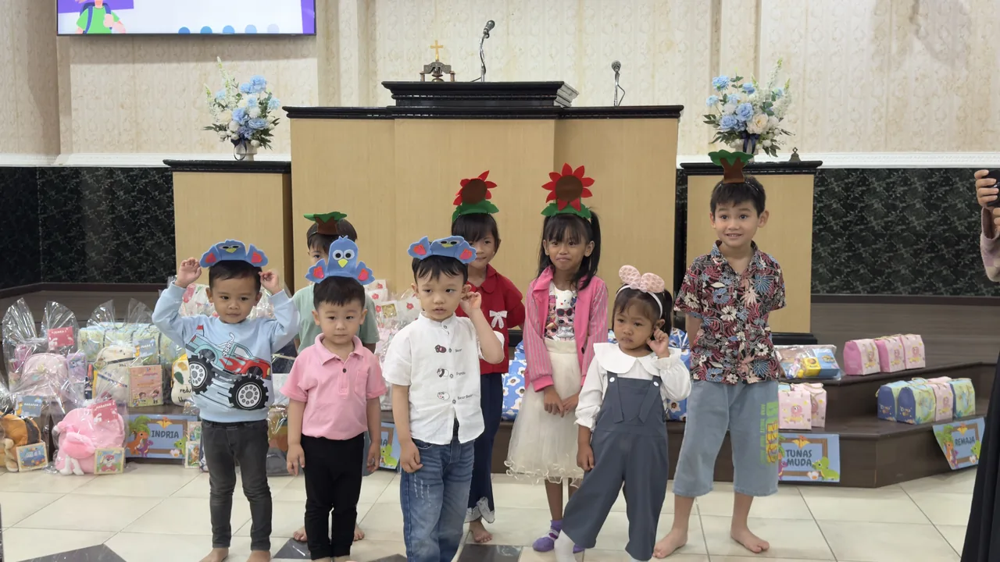

3–5 thKelas Indria
Kelas Indria adalah jenjang awal bagi anak usia dini untuk mengenal kasih Tuhan melalui kegiatan sederhana dan menyenangkan seperti bernyanyi, bermain, dan membaca cerita dari Alkitab. Ini juga membentuk karakter dasar sebagai fondasi iman sejak dini.
child_care
Materi Dasar